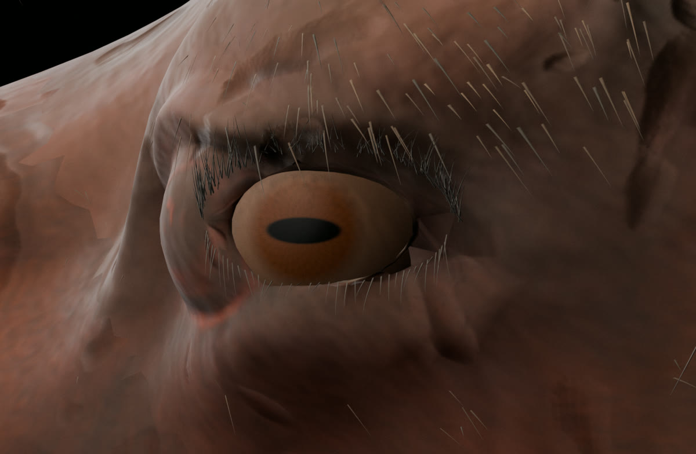
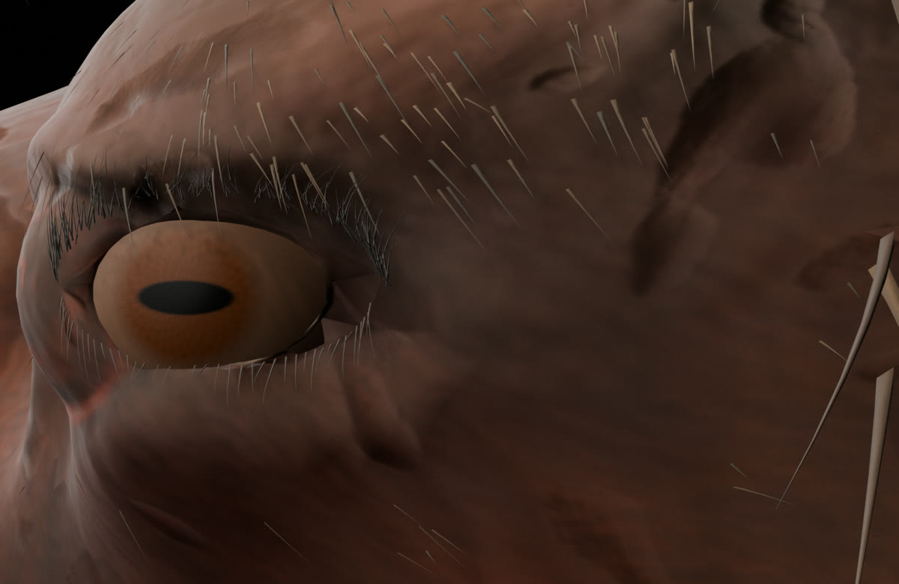
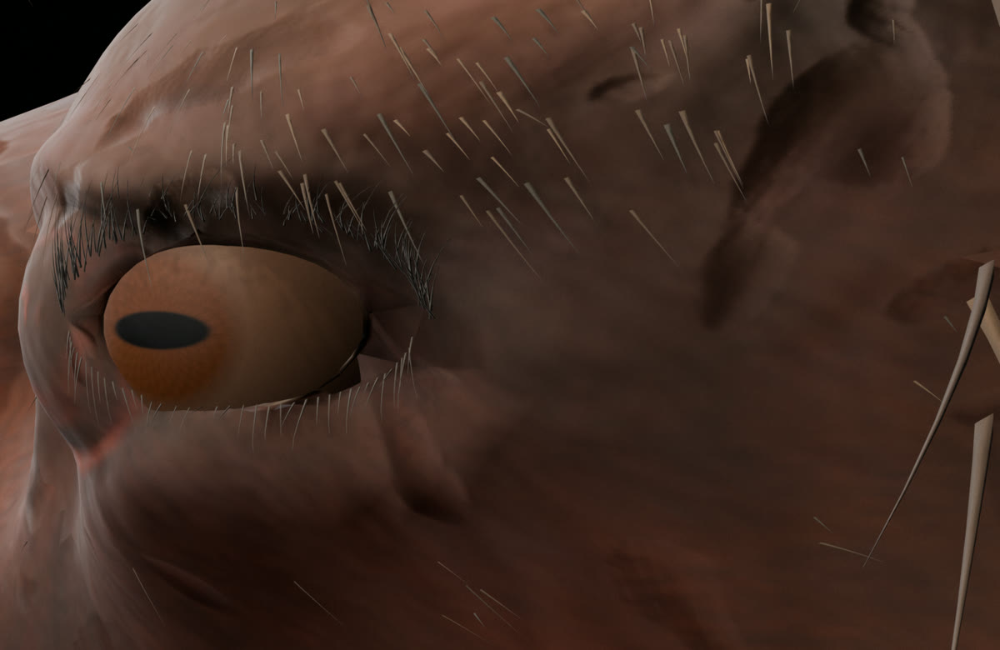
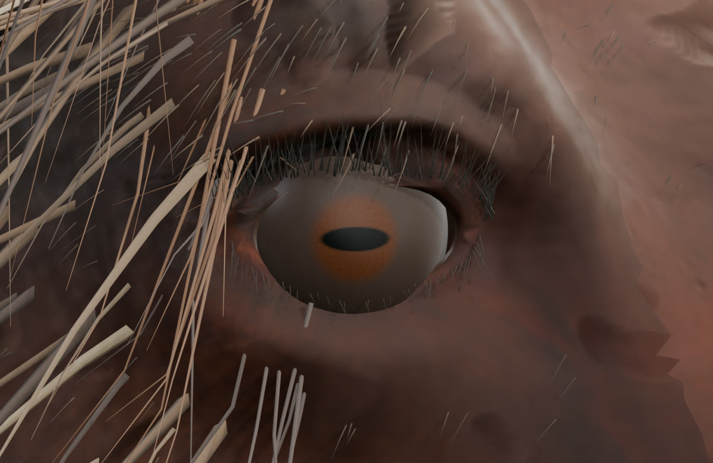
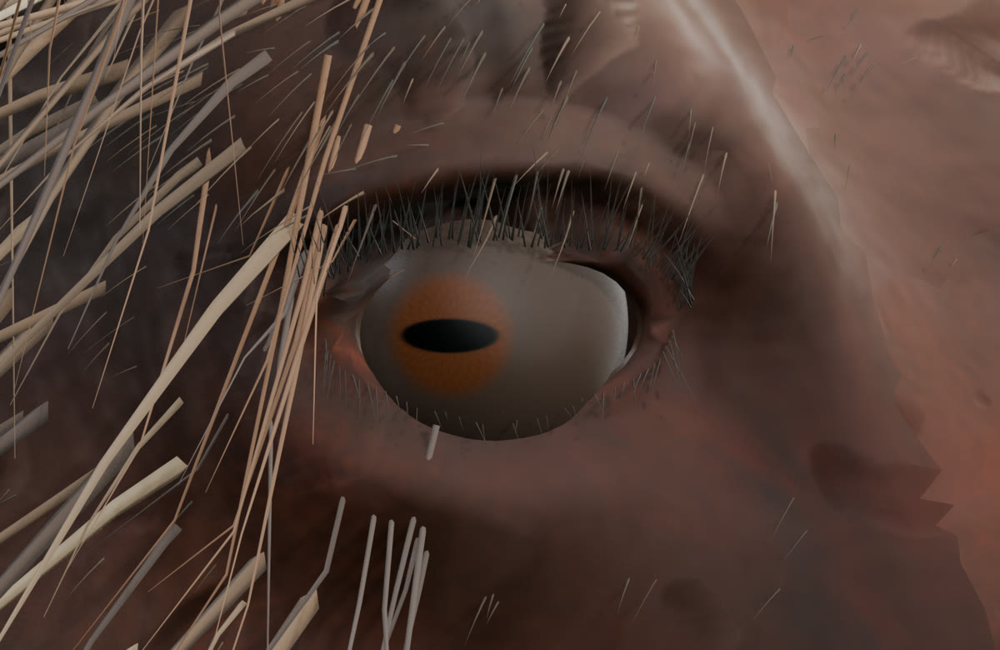
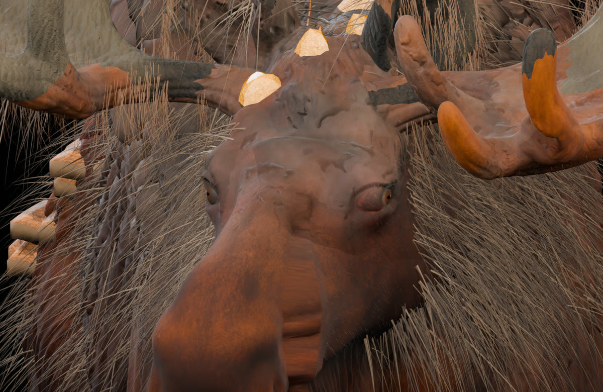
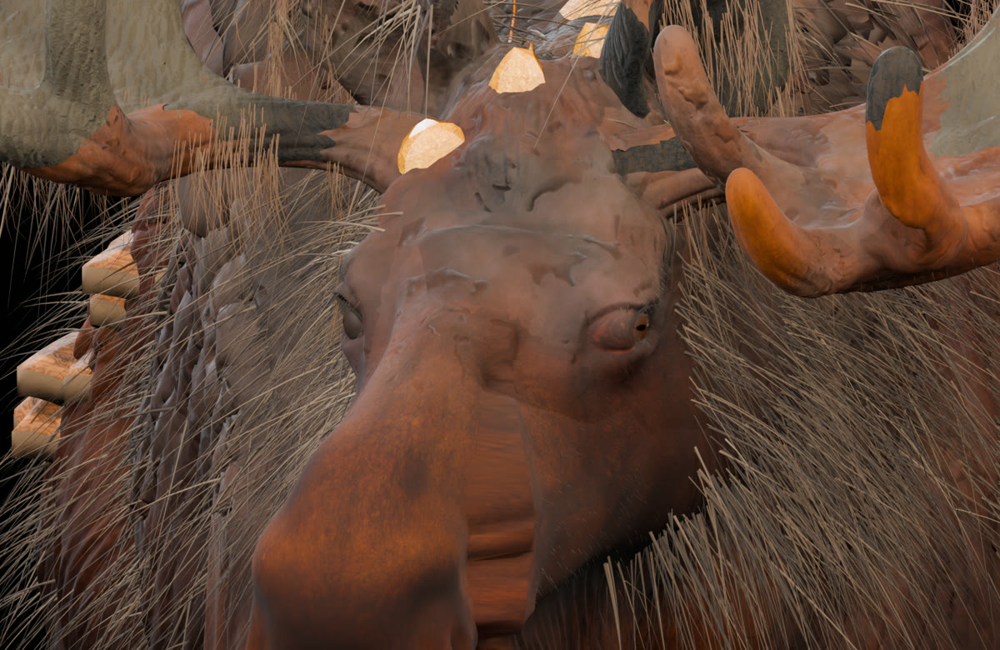
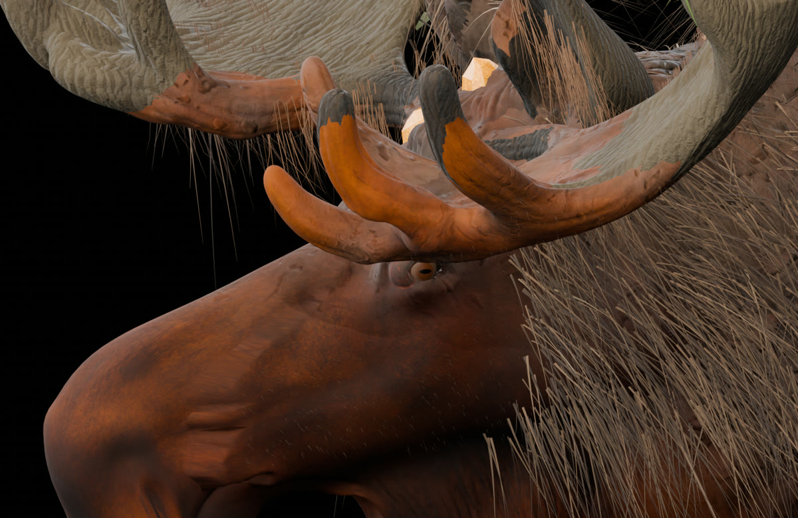
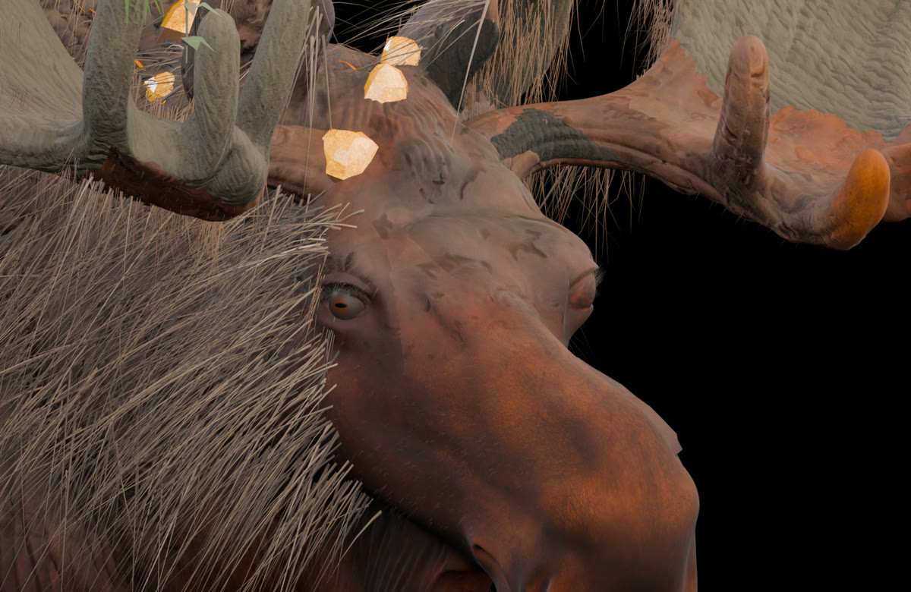

Лось V32M — поправлены глаза и глазницы
Это контрольные рендеры реально отредактированной 3D-модели Blender, не генерация концепта. Правый глаз вместе с кожей глазницы перемещён вперёд ещё на 35 мм (суммарно на 50 мм по локальной оси от V32K). Левое глазное яблоко выдвинуто наружу на 4 мм. Устранено непредусмотренное движение обеих глазниц от анимации дыхания. Голова и веки не вращаются вместе с глазными яблоками.
ЛЕВЫЙ ГЛАЗПРАВЫЙ ГЛАЗ
Правая сторона+35 мм вперёд к морде вместе с глазницей; суммарно +50 мм от V32K
Левая сторонаГлазное яблоко на 4 мм наружу; глазница остаётся на месте во время взгляда
Проверка анимации60/60 кадров — совпадающие углы двух глаз; 0 мм нежелательного движения кожи в контрольных участках
Сравнение до и после — правый глаз
В обоих снимках использован один и тот же ракурс камеры, чтобы разница положения глаза была видна без подмены перспективы.


Правый и левый глаз: два положения



Морда и положение глаз в пространстве



